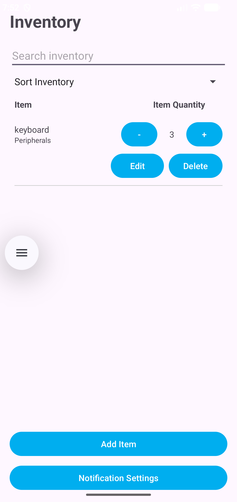
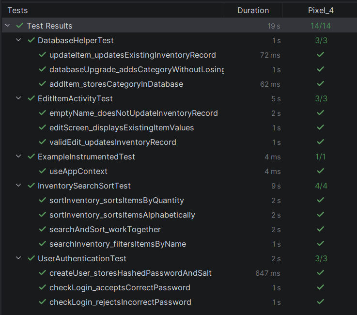
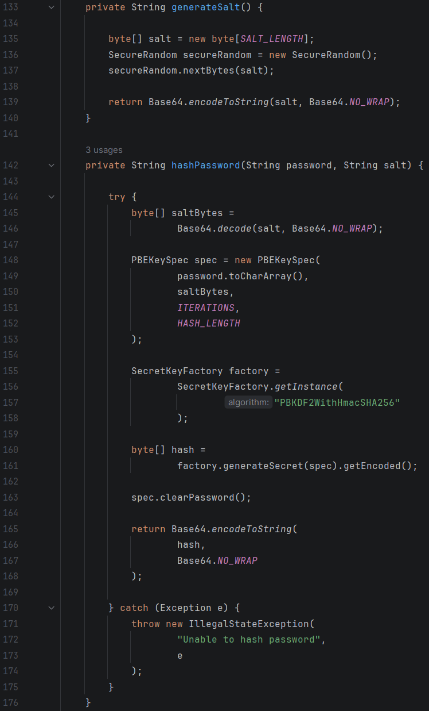

Artifact Overview
The artifact selected for the Databases category is an Android inventory management application originally developed in CS 360: Mobile Architecture and Programming at Southern New Hampshire University.
The application was developed in Java using Android Studio and uses SQLite for persistent storage of inventory records and user accounts. The database supports CRUD operations, allowing information to be maintained across application sessions.
I selected this artifact because its original database implementation provided opportunities to improve data organization, preserve existing records during database upgrades, and strengthen the security of stored user credentials.
Enhancement
The database enhancement focused on improving data organization, maintaining compatibility with existing records, and strengthening the security of stored user credentials.
I expanded the SQLite database schema to include an inventory category field and updated the associated CRUD operations to support the additional information. This allows inventory records to contain more descriptive information while maintaining the application's existing functionality.
I also implemented database migration logic to preserve existing inventory records and user accounts during schema upgrades. Rather than replacing the database during an upgrade, the migration process updates its structure while retaining previously stored data.
To address a security weakness in the original implementation, I replaced plaintext password storage with salted PBKDF2 password hashing. User credentials are now protected using password hashes, and login validation verifies entered passwords against the stored credentials.
Testing included database upgrades and verification of data preservation. This process also demonstrated the importance of accurately representing earlier database versions when testing migration behavior.
Skills Demonstrated
Database Design
Expanded the SQLite database schema to support inventory categories and updated CRUD operations to accommodate the additional data.
Database Migration
Implemented schema migration logic that preserves existing inventory records and user accounts during database upgrades.
Data Security
Replaced plaintext password storage with salted PBKDF2 password hashing to improve credential protection and authentication security.
Database Testing
Tested database upgrades and data preservation, identifying the importance of accurately reproducing earlier database versions when validating migration behavior.
Course Outcomes
Course Outcome 4
This enhancement demonstrates the use of SQLite, Java, database design, and migration techniques to improve an existing application's data management capabilities. The changes expanded inventory information while preserving existing records and user accounts during database upgrades.
Course Outcome 5
This enhancement demonstrates a security mindset through the identification and mitigation of insecure credential storage. Replacing plaintext passwords with salted PBKDF2 password hashing improved the protection of sensitive user data and strengthened the application's authentication process.
Development Reflection
This enhancement strengthened my understanding of database design and the challenges involved in modifying an existing application without disrupting its data. Expanding the SQLite schema required consideration of how database changes would affect existing records, application functionality, and future upgrades.
Implementing database migration logic demonstrated the importance of preserving data when introducing structural changes. Testing the migration process also reinforced the need to accurately reproduce earlier database versions to verify that upgrades behave as intended.
Improving password storage provided an opportunity to apply security principles to an existing application. Replacing plaintext credentials with salted PBKDF2 password hashing reinforced the importance of identifying vulnerabilities and protecting sensitive information as part of software development.
Overall, this enhancement demonstrated how database design, data integrity, testing, and security work together to improve application reliability. It also strengthened my ability to evaluate existing systems and implement changes that provide practical value without sacrificing existing functionality.
Artifact Materials
The following materials include the enhancement narrative and source code before and after the database enhancement.
Application Screenshots

Inventory records include category information supported by the enhanced SQLite schema.

Database migration testing verifies that existing inventory records and user accounts are preserved during upgrades.

Password security verification demonstrates the use of salted PBKDF2 hashing instead of plaintext credential storage.